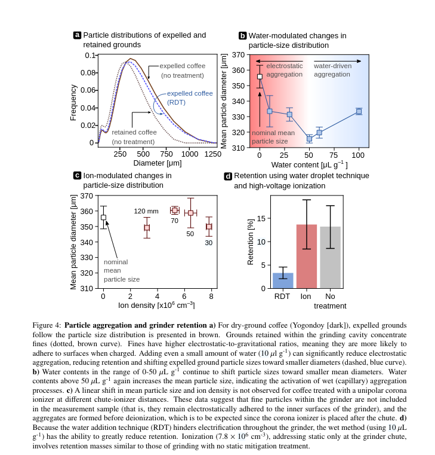
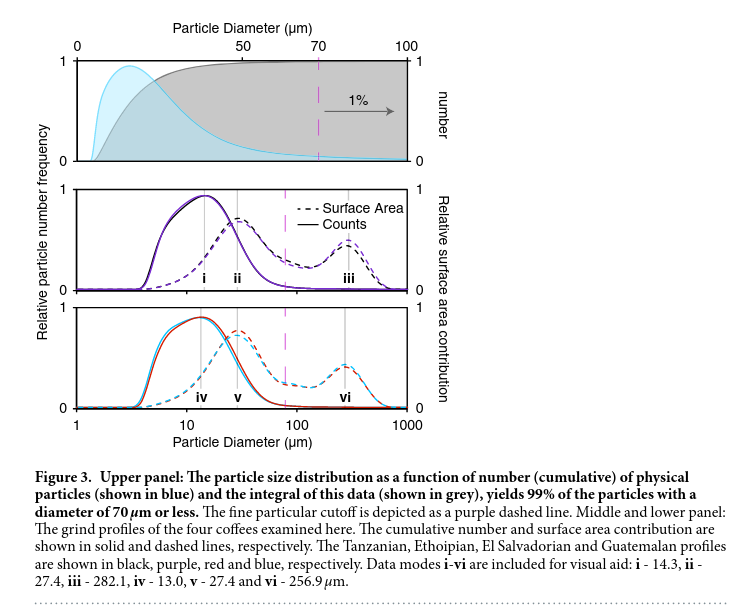
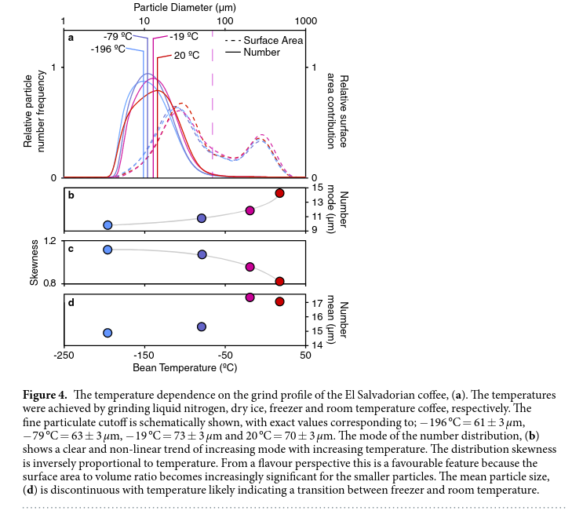

What Science Says About Coffee Grinding
Date: 2024-08-30
Last Updated:
Four Coffee Observations in Two Studies
There is something beautiful about scientists being given the freedom to apply their skills to passion projects. High-impact science is valuable, but the purity of studying a hobby out of sheer interest is something I will always appreciate.
Here are four observations from two scientific papers on the practice of coffee grinding. Experienced coffee nerds might know some of these intuitively, but now we have graphs to back them up.
1. Study One: Chemical strategies to mitigate electrostatic charging during coffee grinding
One interesting aspect of coffee grinding is the role of electrostatic charges. When you grind coffee, the particles become charged, causing them to clump together and stick to the sides of the grinder. This can be annoying, as it creates a mess on your coffee station, but it can also significantly impact the quality of the coffee.
When coffee grounds clump together, water can't flow through them evenly during brewing. This uneven extraction leads to what's known as "channeling," where water finds the path of least resistance and flows through only part of the coffee bed. The result is a cup of coffee that's less flavorful and more bitter than it should be. This paper quantifies two strategies used to minimize this effect.
1.1 Electrical De-ionizers
Many modern "luxury" grinders include high-voltage ionizers fitted on the exit chute of the grinder. The idea behind this device is to bombard the coffee grinds with charged particles, which neutralize any static charge picked up during the grinding process.

The graphs shown in d and b demonstrate that fitting an electrical de-ionizer does indeed reduce the charge buildup on the coffee grinds.
But this isn't the end of the story. Does this reduction in static charge translate into a better cup of coffee? Observing the bottom graphs in Figure 5 shows almost no difference between espresso prepared with and without the de-ionizer. The researchers note that the flavor difference is negligible as well.
How do we understand this result? The reason seems to be that by the time the de-ionizer does its job, the damage has already been done---the coffee grounds have already clumped together.
So while a de-ionizer might make your coffee station less messy, it's not going to make your coffee taste better.
This raises an interesting question: Could combining a de-ionizer with a grind distribution tool improve the situation? While de-ionizing the coffee grinds does not cause the clumps to dissipate on their own, perhaps it can make them easier to break apart with a coffee distribution tool?
1.2 Spritzing the beans with water.
Another method for reducing static is much simpler: just spritz your coffee beans with a little water before grinding. The idea is that the water will dissipate charge as soon as it builds up. This method is much lower-tech than the solution described above, but how does it compare?
The researchers measured a reduction in static charge when a small amount of water was added to the coffee before grinding. It also resulted in lower retention (i.e., how much coffee gets stuck in the grinder) and reduces the grind coarseness, and increases grind uniformity.

So how does this affect taste? The study observed that the addition of water leads to a slower flow rate during brewing, which results in a more concentrated extraction---especially with darker roasts. This is also illustrated in figure 5.

1.3 Lessons from this paper
- Grinders fitted with an electrical de-ionizer do not produce better coffee but do result in less mess when making coffee.\
- Treating beans with a spray of water reduces clumping, resulting in increased extraction and lower grinder retention.
2. Study Two: The effect of bean origin and temperature on grinding roasted coffee
The second study focused on how different factors related to the coffee beans themselves affect grinding
This paper compares the effects of both bean origin and bean temperature prior to grinding.
2.1 The Effect of Bean Origin
Will different single-origin coffees grind differently? For once, the answer is simple: NO!

It appears that between different coffees, the grind distribution produced by the EK43 commercial are near identical for all of them.
- Four speciality grade coffees were ground to study grind profile variations.
- Grind profiles showed a skewed-Gaussian shape with particle sizes ranging from 0.1 μm to 1000 μm.
- All coffees had similar grind distributions, with minor differences in number modes and fine particulates cutoff.
There are a couple things to note here: - All 4 coffees tested were light/medium roast - This test was only done on an EK43 grinder
There are a couple of things to note here:\
- All four coffees tested were light/medium roast.\
- This test was only done on an EK43 grinder.
This raises a few questions about the generalization of the study:\
- Do darker roasts have the same particle size distribution as light roasts?\
- If not:\
- Are they self-consistent, like the lighter ones are?\
- The EK43 is an expensive commercial grinder. How consistent are cheaper home grinders?
2.2 Effect of Bean Temperature
If you've ever ordered one of those expensive coffees---like the ones that cost more than $10 a cup---you may have seen the barista pull the coffee out of a freezer. The reason for this is obvious: they want to keep the good stuff fresh for as long as possible. These baristas tend to develop an intuition that freezing the beans makes them "shatter" more evenly. So how accurate is their intuition?
It turns out it's quite accurate!

The paper's analysis shows that decreasing the temperature of the beans, all the way down to -196°C, decreases both the average size of each particle and reduces the "spread" of coffee grind sizes.
The intuition of shattering beans turns out to be an accurate description of what is happening here. While there are (almost) no ice crystals within the bean to shatter, the bean itself has a crystalline structure sensitive to temperature. So chilling the beans really does cause them to shatter when you hit them.
However, there are some caveats. As the beans pass through the grinder, they warm up due to friction and contact with hot grinder blades. This causes diminishing returns both as the coffee gets colder and as the grinder is set finer.
Interestingly, this effect seems to be reversible. Coffee that's cooled to extremely low temperatures and then warmed back up to room temperature behaves just like coffee that was never cooled in the first place.
3. So what did we learn?
The actionable takeaways from this mini deep dive are:
- Adding water to your coffee pre-grind improves extraction, reduces retention, and slightly decreases coarseness.\
- Freezing coffee increases grind size uniformity.\
- The electrical de-ionizer on expensive grinders helps reduce mess but does not appear to improve your coffee's quality (although combining de-ionization with distribution tools has not been studied).\
- Different coffees will have similar grind profiles on the same grinder with identical settings.
If you know of any novel research on coffee, let me know! My email is in the "Contact Me" section of my website, and my Mastodon handle is on the sidebar.
3 Sources
Harper, J.M., Hendon, C.H., 2023. Chemical strategies to mitigate electrostatic charging during coffee grinding. https://doi.org/10.48550/arXiv.2312.03103
Uman, E., Colonna-Dashwood, M., Colonna-Dashwood, L., Perger, M., Klatt, C., Leighton, S., Miller, B., Butler, K.T., Melot, B.C., Speirs, R.W., Hendon, C.H., 2016. The effect of bean origin and temperature on grinding roasted coffee. Sci Rep 6, 24483. https://doi.org/10.1038/srep24483